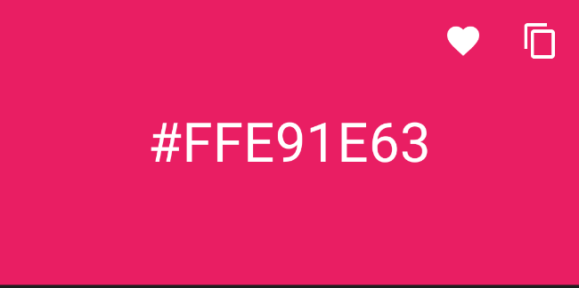
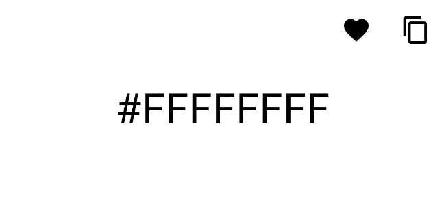

Contrasting text and icons over background
Detecting whether background is dark or light to pick the right foreground color for better contrast.
Quite often we’ve needed to display icons or texts on top of colored backgrounds or images and we’ve fallen into contrasting problems. Let’s say we have a header like this one in our app.

That looks fine. Since background color is dark enough, we can go ahead and show light icons and texts over it so there’s enough contrast. But what if we switched the background to be a very light color dynamically? (let’s say white). In that case we’d rather showing dark icons and texts instead.

So we need a way to calculate how “dark” or “light” is a color at runtime. We can use ColorUtils.calculateLuminance(colorInt) for this. Let’s write a handy extension to improve semantics, so we can call it over any ColorInt.
fun @receiver:ColorInt Int.isDark(): Boolean =
ColorUtils.calculateLuminance(this) < 0.5
You can find androidx.core.graphics.ColorUtils in the androidx.core atifact. If you have been using other AndroidX libraries until now it’s highly possible that you already got this dependency transitively.
Color luminance
We are considering a ColorInt dark when the “luminance” is lower than 0.5. That’s not just an arbitrary number. Let’s learn what “color luminance” means first, so we can understand the picked threshold.
Luminance is a measure to describe the perceived brightness of a color.
Gotcha, it’s about how colors are perceived.
If you dive into ColorUtils.calculateLuminance(colorInt) you’ll find it transforms the color into the “XYZ color space” first to get the luminance.
The XYZ color space belongs to the category of CIE 1931 color spaces, which were created to reflect physiologically perceived colors in human color vision. The color theory is obviously quite more technical as you can see from the provided link. I’m not an expert in colors either, but given we’re interested in how colors are perceived by the human eye for this, this color space would be a perfect fit.
These color spaces are “important when dealing with color inks, illuminated displays, and recording devices such as digital cameras”.
“The CIE XYZ color space encompasses all color sensations that are visible to a person with average eyesight. That is why CIE XYZ (Tristimulus values) is a device-invariant representation of color.”
That is significative for us, since we’d rather basing our calculations on how the color is perceived by the human eye under well-lit conditions, intentionally ignoring the massive device screen fragmentation out there.
In the XYZ color space, the second component (Y) represents relative luminance.
When judging the relative luminance (brightness) of different colors in well-lit situations, humans tend to perceive light within the green parts of the spectrum as brighter than red or blue light of equal power… The CIE model capitalizes on this fact by setting Y as luminance.
The unit of the tristimulus values X, Y, and Z is often arbitrarily chosen so that Y = 1 or Y = 100 is the brightest white that a color display supports.
There you go. That’s why 0.5 (half of it when we represent it as a value between 0 and 1) is the perfect threshold value.
The closer Y gets to 1, the lighter the color is perceived by the human eye. The closer it gets to 0, the darker.
As you can imagine ColorUtils.calculateLuminance(colorInt) relies on the Y component of the color, once it’s converted to the XYZ color space.
With this in mind, we can set the color for our icons and texts accordingly.
val color = Color.parseColor("#e91e63")
if (color.isDark()) {
colorHex.setTextColor(R.color.white)
favIcon.setImageResource(R.drawable.ic_favorite_border_white_24dp)
} else {
colorHex.setTextColor(R.color.black)
favIcon.setImageResource(R.drawable.ic_favorite_border_black_24dp)
}
And we’re good to go 👍
When background is an image
We’ve got a function to calculate luminance given a color, but what can we do when the background is an image?
Well we can steal some color utilities from Plaid for this. Thanks to @crafty and the rest of the Google Android devs for sharing such an awesome sample project.
Let’s say we’ve got this header this time. Look at these two variants:
You can see how the one with the dark fav icon works quite better for this background image. But this all depends on the image. E.g: A light icon would work better for this one:
So again, we need a way to dynamically calculate the better contrasting color per image, given urls for those will often come from server, so we cannot know the images to be used beforehand.
Regardless of what async image loading library we use (Picasso, Glide, Coil or any others), there’s always ways to get dynamic access to the loaded Drawable / Bitmap. Libraries use to provide callbacks for this.
As soon as we get access to the loaded Bitmap, we can do the following:
private fun bindFavIcon(bitmap: Bitmap) {
val iconSize = favIcon.width
Palette.from(bitmap)
.maximumColorCount(3)
.clearFilters()
.setRegion(bitmap.width - iconSize , 0, bitmap.width, iconSize)
.generate { palette ->
// Do something with the region palette.
}
}
We use Palette to extract the colors of the Bitmap, but just for a given region. Since our icon is aligned top|end, we’ll only be interested in the top right image corner, not the rest, so we set the region accordingly.
Then we can call val lightness = ColorUtils.isDark(palette). Note that we’re talking about the Plaid ColorUtils for this one. This is not included in the AndroidX ones.
This variant extracts the “most populous color” from the region palette, then it calls isDark(color) over it. But since Palette is not always able to calculate the mentioned color, there’s a chance that it returns LIGHTNESS_UNKNOWN.
private fun bindFavIcon(bitmap: Bitmap) {
val iconSize = favIcon.width
Palette.from(bitmap)
.maximumColorCount(3)
.clearFilters()
.setRegion(bitmap.width - iconSize , 0, bitmap.width, iconSize)
.generate { palette ->
val lightness = ColorUtils.isDark(palette) // might be unknown!
val isDark = if (lightness == ColorUtils.LIGHTNESS_UNKNOWN) {
...
} else {
lightness == ColorUtils.IS_DARK
}
}
}
In that case we need a second fallback. We can rely on another variant: ColorUtils.isDark(bitmap, bitmap.width - iconSize / 2, iconSize / 2).
This one determines if a given Bitmap is dark, and if it’s not able to, it has a third fallback to the color of the given pixel (x, y) provided as second and third arguments in the call. We can pass the full Bitmap (not just the region) for it and see whether we have more luck.
This is how the complete code snippet would look like:
Palette.from(bitmap)
.maximumColorCount(3)
.clearFilters()
.setRegion(bitmap.width - iconSize , 0, bitmap.width, iconSize)
.generate { palette ->
val lightness = ColorUtils.isDark(palette)
val isDark = if (lightness == ColorUtils.LIGHTNESS_UNKNOWN) {
ColorUtils.isDark(bitmap, bitmap.width - iconSize / 2, iconSize / 2)
} else {
lightness == ColorUtils.IS_DARK
}
if (isDark) { // make back icon dark on light images
favIcon.setImageResource(R.drawable.ic_favorite_border_white_24dp)
} else {
favIcon.setImageResource(R.drawable.ic_favorite_border_black_24dp)
}
}
Of course the third fallback (pixel color) is not great, since surrounding pixels close to it might not have similar colors, but it’s very unlikely that it gets called and I guess it’s better than nothing.
And with this, you’d get your solution ready to work with dynamic images 👌
Final words
So often designs are a bit naive on dynamic content, but you noticed how content directly affects the user experience. It’s our responsibility to ask the design team what should we do under the mentioned scenarios, so we can make them be aware of the problem in the first place. The ultimate goal is that both teams can work together to achieve an optimal result.
If you are interested in Android, I share thoughts and ideas on Twitter, quite regularly. You can also find me on Instagram. Please feel free to follow.
See you around 👋🎨
Want to support me?
If you reached this point you might consider supporting me for boosting my will to write. If that’s the case, here you have a button, really appreciated! 🤗
Supported or not, I will keep writing and providing content for free ✅